Classer
ClasserActivité accessible par le menu général ou l'icône 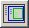 si on a rempli et vérifié un tableau de caractère.
Classer
Activité
accessible par le menu général ou l'icône 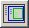 si on
a rempli et
vérifié un tableau de caractère.
Cette activité est destinée au collège ou à la classe de seconde (biodiversité).
Au lycée Cette activité n'est pas dans la logique des programmes du lycée, elle n'est directement accessible que pour les collections destinées aux classe de seconde et de première, qui fonctionnent en "mode collège". En terminale, la délimitation des groupes phylogénétiques se fait à la fin, directement sur les arbres.
si on le souhaite, on peut faire fonctionner une collection lycée en mode collège en opérant de la manière suivante :
* choisir la collection
*utiliser ensuite le menu configuration pour
cocher le mode "Seconde" et cliquer sur OK.
L'activité classer consiste à regrouper les taxons par la présence d'un même état dérivé d'un caractère. Cette activité aboutit à la construction de groupes emboîtés regroupant des taxons qui partagent les mêmes caractères.
Voir la méthode
Pendant cette étape et par la suite, il est possible d'avoir accès aux documents.
Fusionner celles qui ont le même contenu, emboiter celles qui sont contenues dans une autre.
| 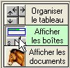 |
Lorsque l'on clique sur le titre d'une colonne la boîte correspondante se trace. Elle contient toutes les espèces ayant le caractère à l'état dérivé.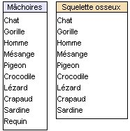
|
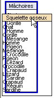 | 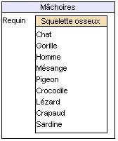 |
| 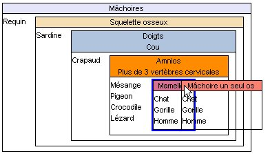 |
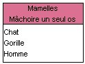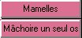 Lorsque deux boîtes fusionnent, les colonnes sont aussi fusionnées automatiquement. Il est aussi possible de faire apparaître toutes les boîtes en même temps, avec le bouton 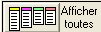 |
||
Voir la méthode.
Résultat final :
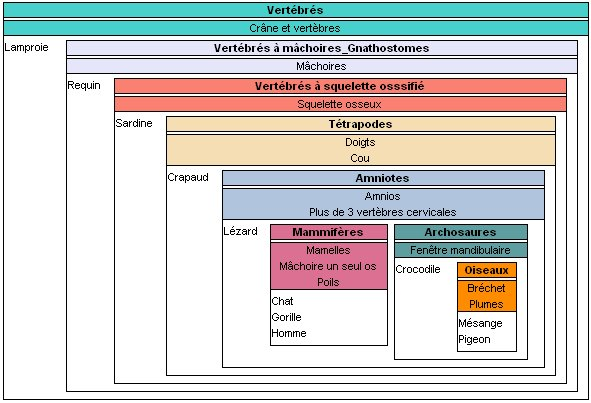
Faire vérifier l'emboîtement.